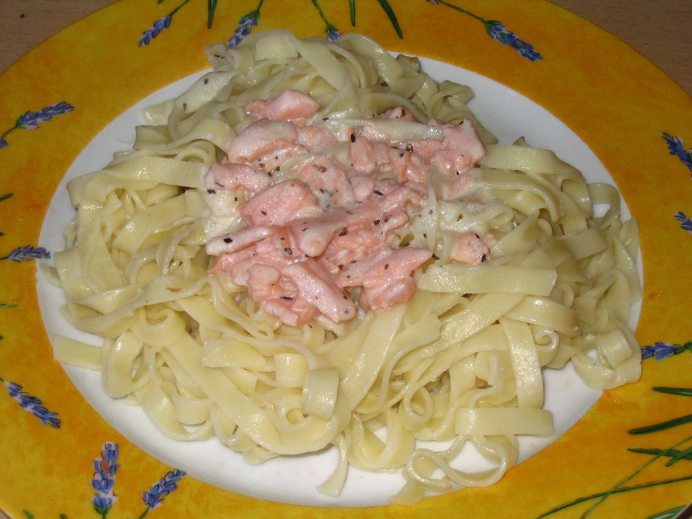

Pâtes au saumon

Informations
Difficulté :
Prix :
Temps :
Nombre de personnes :
Ingrédients
- 300 g de pâtes
- 120 g de saumon
- 30 g de crème fraîche
- 1 oignon
Étapes
- Couper le saumon et l'oignon en morceaux.
- Mettre les pâtes à chauffer dans de l'eau bouillante.
- Pendant que les pâtes cuisent, mettre le saumon et les oignons à cuire dans une poële.
- Une fois que les oignons et le saumon sont cuits, ajouter la crème fraîche.
- Dès que les pâtes sont cuites, les retirer et les essorer puis les mettre dans un plat.
- Ajouter le contenu de la poële au plat de pâtes.